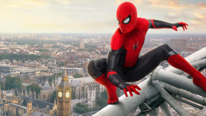
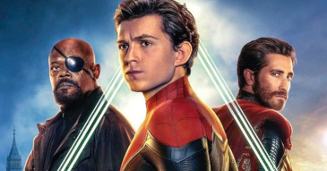
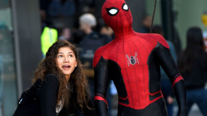

<!DOCTYPE html>
<html lang="pt-br">
<head>
  <meta charset="UTF-8">
  <meta http-equiv="X-UA-Compatible" content="IE=edge">
  <meta name="viewport" content="width=device-width, initial-scale=1.0">
  <title>Multiverso | Spiderman</title>
  <link href="../../assets/css/internal.css" rel="stylesheet" />
  <link rel="stylesheet" href="https://cdn.jsdelivr.net/npm/@fancyapps/ui@4.0/dist/fancybox.css" />
  <style>
    .s-wrapper .s-main-content .s-logo img {
      margin-top: 0px;
      margin-bottom: 0px;
    }

    .gallery {
      padding: 0px 20px;
      padding-left: 0;
}
  </style>
</head>
<body>
  <main class="s-wrapper">

    <video autoplay loop muted>
      <source src="../../assets/videos/spiderman2-2019-trailer.mp4" type="video/mp4">
    </video>
    
    <aside class="s-left-column">
      
      <nav class="navigator">
        <aside class="navigator__icon">
          <a href="../../index.html">
            
          </a>
        </aside>
        <ul>
          <li><a href="spidermantom1.html">01</a></li>
          <li><a href="spidermantom2.html">02</a></li>
          <li><a href="spidermantom3.html">03</a></li>
        </ul>
      </nav>
    </aside>


    <aside class="s-main-content">
      <aside class="s-main-content__top">
        <aside class="s-logo">
          
        </aside>
        <aside class="s-description">
          <aside class="pills">
            <ul>
              <li>Ano: 2019</li>
              <li>Diretor: Jon Watts</li>
            </ul>
          </aside>

          <aside class="s-description__text">
            <p><strong>Sinopse:</strong>&nbsp;Peter Parker está em uma viagem de duas semanas pela Europa, ao lado de seus amigos de colégio, quando é surpreendido pela visita de Nick Fury. Convocado para mais uma missão, ele precisa enfrentar vários vilões que surgem em cidades-símbolo do continente, como Londres, Paris e Veneza, e também a aparição do enigmático Mysterio.</p>
          </aside>
        </aside>

        <aside class="s-links">
          <ul>
            <li>
              <a href="https://www.youtube.com/watch?v=L8qtbebt-y0" class="link-button" target="_blank">
                <span class="icon">
                  <aside class="play-icon">&nbsp;</aside>
                </span>
                <span class="label">
                  Assistir trailer
                </span>

              </a>
            </li>
          </ul>
        </aside>
      </aside>

      <aside class="s-main-content__bottom">
        <aside class="gallery">
          <ul>
            <li>
              <a data-fancybox href="../../assets/images/spiderman-tom/movie-02/gallery/imagem-01-full.jpg">
                
              </a>
            </li>
            <li>
              <a data-fancybox href="../../assets/images/spiderman-tom/movie-02/gallery/imagem-02-full.jpg">
                
              </a>
            </li>
            <li>
              <a data-fancybox href="../../assets/images/spiderman-tom/movie-02/gallery/imagem-03-full.jpg">
                
              </a>
            </li>
          </ul>
        </aside>
      </aside>

    </aside>
  </main>

  <script src="https://cdn.jsdelivr.net/npm/@fancyapps/ui@4.0/dist/fancybox.umd.js"></script>
  <script>
    //  JavaScript will go here
  </script>

</body>
</html>